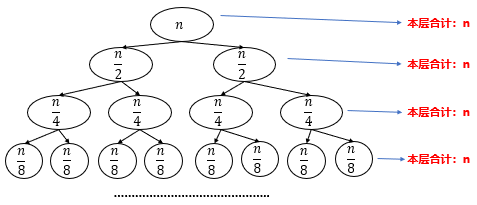
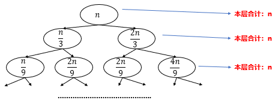

第10章 时间复杂度进阶
递推法求阶乘时间复杂度
教材使用阶乘函数说明递推法分析递归时间复杂度。
int fact(int n) {
if (n == 1)
return 1;
return n * fact(n - 1);
}
其递推关系为：
T(n) = 1 n = 1
T(n) = T(n - 1) + 1 n > 1
逐层展开：
T(n)
= T(n - 1) + 1
= T(n - 2) + 2
= ...
= T(1) + n - 1
= n
因此：
T(n) = O(n)
主定理求递归时间复杂度
采用分治策略的代码通常设计为递归算法。
教材给出的递归形式为：
T(n) = O(1) n = n0
T(n) = aT(n / b) + f(n^d) n > n0
其中：
a ≥ 1b > 1a、b为常数f(n)为正函数T(n)代表当前层的时间复杂度n是问题规模a是原问题的子问题个数n / b是每个子问题的规模f(n^d)代表当前层进行分解和合并所需要的时间复杂度
教材给出的主定理形式：
T(n) =
O(n^d) d > log_b(a)
O(n^d log n) d = log_b(a)
O(n^(log_b(a))) d < log_b(a)
情况 1
如果：
d > log_b(a)
教材进一步给出正则条件：存在 ε > 0，使得：
f(n^d) = O(n^(log_b(a) + ε))
并且对某个 c < 1 与所有足够大的 n，有：
a f(n / b) ≤ c f(n)
则：
T(n) = O(n^d)
情况 2
如果：
d = log_b(a)
则：
T(n) = O(n^d log n)
情况 3
如果：
d < log_b(a)
则：
T(n) = O(n^(log_b(a)))
对递归树所产生的所有项求和就是递归方程的解。
例1：快速排序

层数共计： 层
例 1：棋盘覆盖问题时间复杂度
递推式：
T(n) = 1 n = 1
T(n) = 4T(n / 2) + 1 n > 1
![棋盘覆盖时间复杂度树图]()
参数：
a = 4
b = 2
d = 0
因为：
log_2(4) = 2
d < log_b(a)
所以：
T(n) = O(n^2)
例 2：归并排序时间复杂度
递推式：
T(n) = 1 n = 1
T(n) = 2T(n / 2) + n n > 1
参数：
a = 2
b = 2
d = 1
由于：
d = log_2(2) = 1
因此：
T(n) = O(n log n)
例 3
递推式：
T(n) = 1 n = 1
T(n) = 4T(n / 2) + n^3 n > 1

参数：
a = 4
b = 2
d = 3
因为：
d > log_2(4)
教材取：
ε = 1
f(n) = O(n^3)
并验证：
4f(n / 2)
= 4(n / 2)^3
= n^3 / 2
≤ c f(n)
其中：
1/2 ≤ c < 1
因此：
T(n) = O(n^3)
不能用主定理求解的情况
教材给出的递推式：
T(n) = 1 n = 1
T(n) = 2T(n / 2) + n log n n > 1
其中：
n^(log_2 2) = n
f(n) = n log n
教材指出：由于找不到一个常数 ε，使得：
f(n) = O(n^(log_b(a) + ε))
因此该递推式不适用教材前面给出的主定理形式。
递归树求递归时间复杂度
教材指出：
对递归树所产生的所有项求和，就是递归方程的解。
例 1：快速排序
递推式：
T(n) = 1 n = 1
T(n) = 2T(n / 2) + n n > 1
递归树中每一层总代价均为：
n
层数：
k = log n
因此：
T(n) = O(n log n)
例 2：棋盘覆盖
递推式：
T(n) = 1 n = 1
T(n) = 4T(n / 2) + 1 n > 1
递归树各层结点数依次为：
1, 4, 16, ...
层数：
k = log n
教材推导：
T(n)
= O((1 - 4^k) / (1 - 4))
= O(4^k)
= O(2^(2k))
= O(2^(log(n^2)))
= O(n^2)
例 3
递推式：
T(n) = 1 n = 1
T(n) = T(n / 3) + T(2n / 3) + n n > 1
递归树中每一层总代价为：
n
层数教材写为：
k = log_(3/2)(n)
因此：
T(n) = O(n log_(3/2)(n)) = O(n log n)
单项选择题
1. 递推式复杂度
T(n) 表示某个算法输入规模为 n 时的运算次数。
如果 T(1) 为常数，且有递归式：
T(n) = 2T(n / 2) + 2n
那么 T(n) 为（ ）。
- A.
O(n) - B.
O(n log n) - C.
O(n^2) - D.
O(n^2 log n)
查看答案
答案：B
2. 递推关系式
假设某算法的计算时间表示为：
T(n) = 2T(n / 4) + √n
T(1) = 1
则算法的时间复杂度为（ ）。
- A.
O(n) - B.
O(√n) - C.
O(√n log n) - D.
O(n^2)
查看答案
答案：C
3. 递推关系式
假设某算法的计算时间表示为：
T(n) = 9T(n / 3) + n
T(1) = 1
则算法的时间复杂度为（ ）。
- A.
O(n) - B.
O(√n) - C.
O(n^2) - D.
O(√n log n)
查看答案
答案：C
4. 递推关系式
假设某算法的计算时间表示为：
T(n) = T(2n / 3) + 1
T(1) = 1
则算法的时间复杂度为（ ）。
- A.
O(n) - B.
O(log n) - C.
O(n^2) - D.
O(√n log n)
查看答案
答案：B
5. 运算次数与时间复杂度
如果对于所有规模为 n 的输入，一个算法均恰好进行（ ）次运算，我们可以说该算法的时间复杂度为 O(2^n)。
- A.
2^(n+1) - B.
3^n - C.
n2^n - D.
2^(2n)
查看答案
答案：A